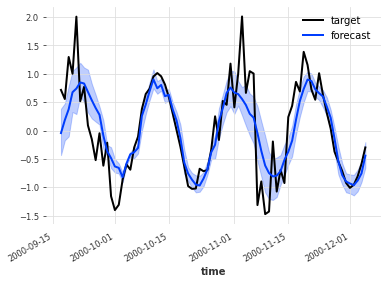
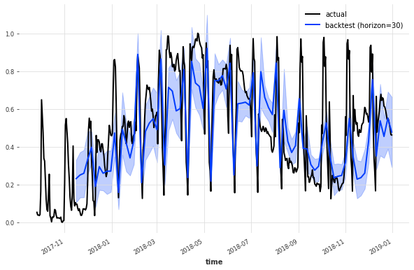

DeepTCN model¶
There is an example of probabilistic forecasting using TCN model that very close to DeepTCN described in https://arxiv.org/abs/1906.04397
[1]:
from utils import fix_pythonpath_if_working_locally
fix_pythonpath_if_working_locally()
%matplotlib inline
[2]:
import pandas as pd
from darts.models import TCNModel
import darts.utils.timeseries_generation as tg
from darts.utils.likelihood_models import GaussianLikelihood
from darts.datasets import EnergyDataset
from darts.utils.missing_values import fill_missing_values
from darts import TimeSeries
from darts.dataprocessing.transformers import Scaler
from darts.utils.timeseries_generation import datetime_attribute_timeseries
import warnings
warnings.filterwarnings("ignore")
import logging
logging.disable(logging.CRITICAL)
import matplotlib.pyplot as plt
Variable noise series¶
[3]:
length = 400
trend = tg.linear_timeseries(length=length, end_value=4)
season1 = tg.sine_timeseries(length=length, value_frequency=0.05, value_amplitude=1.0)
noise = tg.gaussian_timeseries(length=length, std=0.6)
noise_modulator = (
tg.sine_timeseries(length=length, value_frequency=0.02)
+ tg.constant_timeseries(length=length, value=1)
) / 2
noise = noise * noise_modulator
target_series = sum([noise, season1])
covariates = noise_modulator
target_train, target_val = target_series.split_after(0.65)
plt.figure(figsize=(10, 3))
target_train.plot()
target_val.plot()

[4]:
deeptcn = TCNModel(
input_chunk_length=30,
output_chunk_length=20,
kernel_size=2,
num_filters=4,
dilation_base=2,
dropout=0,
random_state=0,
likelihood=GaussianLikelihood(),
)
deeptcn.fit(target_train, past_covariates=covariates, verbose=True)
Training loss: 0.2421
[5]:
pred = deeptcn.predict(80, past_covariates=covariates, num_samples=100)
target_val.slice_intersect(pred).plot(label="target")
pred.plot(label="forecast")

Daily energy production¶
[6]:
df3 = EnergyDataset().load().pd_dataframe()
df3_day_avg = (
df3.groupby(df3.index.astype(str).str.split(" ").str[0]).mean().reset_index()
)
series_en = fill_missing_values(
TimeSeries.from_dataframe(
df3_day_avg, "time", ["generation hydro run-of-river and poundage"]
),
"auto",
)
# scale
scaler_en = Scaler()
series_en_transformed = scaler_en.fit_transform(series_en)
train_en_transformed, val_en_transformed = series_en_transformed.split_after(
pd.Timestamp("20170901")
)
# add the day as a covariate
day_series = datetime_attribute_timeseries(
series_en_transformed, attribute="day", one_hot=True
)
scaler_day = Scaler()
day_series = scaler_day.fit_transform(day_series)
train_day, val_day = day_series.split_after(pd.Timestamp("20170901"))
plt.figure(figsize=(10, 3))
series_en_transformed.plot()

[7]:
deeptcn = TCNModel(
dropout=0.2,
batch_size=32,
n_epochs=20,
optimizer_kwargs={"lr": 1e-3},
random_state=0,
input_chunk_length=300,
output_chunk_length=30,
kernel_size=3,
num_filters=4,
likelihood=GaussianLikelihood(),
)
deeptcn.fit(series=train_en_transformed, past_covariates=train_day, verbose=True)
Training loss: 0.0908
[8]:
backtest_en = deeptcn.historical_forecasts(
series=series_en_transformed,
past_covariates=day_series,
num_samples=50,
start=0.7,
forecast_horizon=30,
stride=5,
retrain=False,
verbose=True,
)
[9]:
plt.figure(figsize=(10, 6))
series_en_transformed[1000:].plot(label="actual")
backtest_en.plot(label="backtest (horizon=30)", low_quantile=0.01, high_quantile=0.99)
plt.legend()

[ ]: